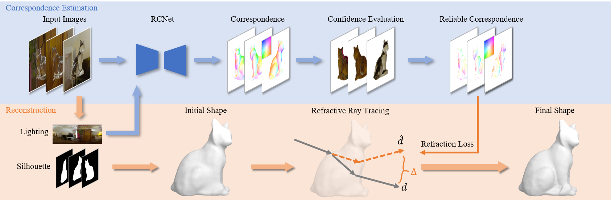

Abstract
Transparent object reconstruction in an uncontrolled natural scene is a challenging task due to its complex appearance. Existing methods optimize the object shape with RGB color as supervision, which suffer from locality and ambiguity, and fail to recover accurate structures. In this paper, we present RCTrans, which uses ray-background intersection as a more efficient constraint to achieve high-quality reconstruction, while maintaining a convenient setup. The key technology to achieve this is a novel pre-trained correspondence estimation network, which allows us to acquire ray-background correspondence under uncontrolled scenes and camera views. In addition, a confidence evaluation is introduced to protect the reconstruction from inaccurate estimated correspondence. Extensive experiments on both synthetic and real data demonstrate that our method can produce highly accurate results, without any extra acquisition burden. The code and dataset will be publicly available.
Pipeline

The overview of RCTrans. Starting from the multi-view images, RCTrans first leverages a pre-trained network and recovered environment lighting to estimate ray-background correspondence for each view. The following confidence evaluation filters those inaccurate results, while the remaining reliable correspondences are used to optimize the initial object shape through differentiable refractive ray tracing, leading to a precise shape. The correspondence is visualized in a similar way to optical flow, with its color map shown in the top left corner.
Capture Setup and Some Results

We present RCTrans, capable of reconstructing precise geometry from multi-view images in uncontrolled natural environments. With the convenient acquisition setup shown on the left, our method achieves accurate geometric reconstruction as demonstrated on the right.